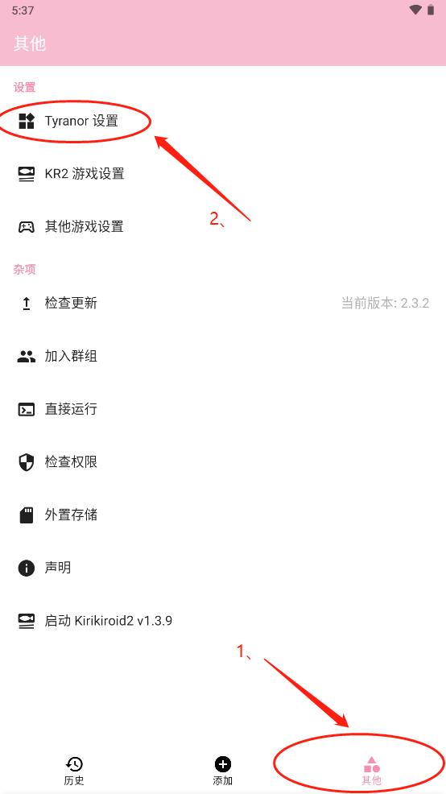

Tyranor 深度盘点：安卓端 KRKR 模拟器到底能跑多远
把 Tyranor 的加载兼容、版本维护、故障排查、存储适配四大能力域逐项拆开看，给正在搭安卓 GalGame 运行环境的你一份系统性参考。
KRKR 引擎的视觉小说和 GalGame 在安卓端的运行方案，长期以来是不少玩家的「灰度区」——原生移植的寥寥无几，模拟器路线又常常踩坑。Tyranor 是目前这条路线上走得比较远的一个开源项目，它的官网上能看到完整的版本迭代，从 2020 年左右开始活跃，如今 v2.3.4 版本把几个老问题都补上了。这篇盘点就从「一个正常玩家从装包到把游戏跑起来」的完整路径出发，把它的能力面完整铺开。
能力域一：加载与启动兼容——三层兜底链
Tyranor 面对的不是单一引擎版本，而是 KRKR 从 v1 到 KRKR2 跨了十几年的格式差异，加上开发者对文件组织方式也没统一标准。加载兼容不是一个开关，而是一条三层兜底链：
第一层是兼容模式——按单游戏隔离，零代价。如果某部游戏画面卡顿或渲染异常，先去游戏列表里长按它的条目，勾选对应的兼容选项。这个设计的妙处在于，你不用为一部冷门作品去影响整个模拟器的默认行为。
第二层是慢速加载模式——全局开关、有代价。只有当游戏根本起不来的时候才考虑开它。慢速加载换了一条更保守的预载路线：把资源先行整理进缓存再运行。代价有两个：等待时间明显拉长，且需要预留大于游戏体积的存储空间做缓存。素材里有一张应用内菜单的截图，慢速加载勾选项就在那一排功能入口里，通常建议临时开、玩完关，避免拖累其他正常游戏的加载速度。
第三层是文件形态优化——这是最容易被忽略的一层。全散文件的游戏（成千上万个小文件）在慢速模式下会非常缓慢，反而应该先考虑打包或保留 ZIP 直读形态。压缩形态对慢速加载更友好，这一点在tyranor文档里反复强调过。
三层兜底的决策顺序很清晰：卡顿先试兼容模式（单游戏、零代价），彻底起不来再试慢速加载（全局、有代价），都无效就转向故障排查路径。这条链本身就是 Tyranor 成熟度的体现——早期版本只有一个加载开关，现在拆成三层后，绝大多数启动问题都能在中间层解决。
能力域二：版本与数据维护——升级不丢档是基本要求
模拟器类应用更新频繁，Tyranor 从 v2.3.2 到 v2.3.4 就连续出了几个版本，每个版本都带着 KR2 启动闪退修复、SD 卡存档导出这类实质性改动。版本管理能力的核心考验是：升级后存档还在不在。
Tyranor 对此的处理分三块：
应用内检查更新。「其他 → 检查更新」会显示当前版本号并查询新版本，升级完成后回到这里确认版本号变化即可。从素材里的截图可以看到，其他页同时还挂着存储、权限这类杂项入口，更新检查就嵌在其中。

升级前的两分钟备份。覆盖安装一般不影响数据，但涉及存档的游戏值得花两分钟：找到存档目录，把 savedata 文件夹整个复制到电脑或另一目录。这个备份成本低到没有理由省略——素材里明确提到，升级失败导致存档丢失的事故虽然不常见，但一旦发生就是毁灭性的。
升级后的三件确认：游戏列表还在不在、权限有没有被回收、KR2 游戏能不能正常启动。v2.3.4 起游戏列表有缓存，重启不清除，但如果列表为空，手动触发一次扫描就好。
版本回退是另一个极端场景——新版本不合手想回去，直接卸载重装旧版 APK 就行，但卸载会清掉应用私有数据，备份存档是硬性前提。历史版本要从tyranor下载这类可信渠道拿，别混装来路不明的「特别版」——签名不一致会导致正版怎么装都报「应用未安装」。
能力域三：安装与故障排查——问题几乎都出在「包」或「机」
Tyranor 的安装环节排错能力，在同类模拟器里算是文档最完整的一档。素材里给了一张对照表，把五种典型报错场景的可能原因和处理方法逐项列了出来：
- 「解析包时出现问题」→ APK 下载不完整或传输中损坏，重新下载；网盘转存的先校验文件再装
- 「应用未安装」→ 与已有应用签名冲突，先卸载来路不明的同包名应用
- 机型不兼容提示 → 安卓版本过低或架构不匹配，换历史版本试
- 存储空间不足 → 清出至少 2～3 倍安装包体积的空间再试
- 安装按钮灰色 / 无响应 → 关闭第三方安全应用的安装拦截后重试
这里有两个容易忽略的点：别混装魔改包——签名不一致会让正版永远装不上；以及安装成功 ≠ 运行成功——应用能打开后，游戏跑不跑得起来是另一组问题，属于启动与运行环节。
什么时候该放弃一个安装包？素材给出了实用的判断：连续换渠道重下、换历史版本都报同一个错，大概率是包本身的问题，不是手机的问题——换一个信得过的源头，比在同一个包上反复折腾省时间。
能力域四：存储管理——SD 卡时代正在远去
把几十 GB 的游戏库塞进 SD 卡曾是安卓玩家的省钱传统，但新版安卓对外置存储越管越严。Tyranor 在 v2.3.4 的更新里专门补了这块，背后是两条正在收紧的规则：
SD 卡目录的读写限制——安卓 11 起应用访问 SD 卡要过系统授权，安卓 13 后部分路径干脆只读。游戏在 SD 卡上的常见症状是扫得到、起不来或存不了档。
Android/data 访问墙——这个目录是应用私有数据区，新版系统连文件管理器都不给直接进了。应用数据与存档可能与它有关。
Tyranor 给的出路是：支持把 SD 卡上 KR2 游戏的存档导出至 Android/data，给受限的存档开了一条合规通道。素材里还贴心给了一张决策表：游戏在 SD 卡频繁出问题的，迁回内置存储的收集目录；必须用 SD 卡的，优先放 KR2 游戏并用新版存档导出；从旧机迁移 SD 卡的，存档先导出再迁移。
还有一个常被误判的因素是 SD 卡本身的健康度。存储卡的读写速度、坏块问题，在跑大游戏时很容易被归罪到模拟器头上。出状况先验卡：用电脑读一次核对文件体积、跑一次读写验证、卡速过低（老 Class 10 以下）直接换。
短板也要说
Tyranor 的能力面铺得不错，但几个短板在盘点时不能跳过：
慢速加载是全局开关——一旦开启作用于所有游戏，不像兼容模式按游戏隔离。这意味着你得记得玩完就关掉，否则整个游戏库的加载速度都会被拖累。
安卓存储政策持续收紧——官方给的通道是「合规导出存档」，但 SD 卡本身的读写限制是系统级的，模拟器能做的只是绕路，没法根本解决。素材里的实用结论很直接：「游戏本体放内置存储，SD 卡留给备份与低频内容」，这是当前最省心的结构。
旧系统兼容成本高——v2.3.4 修了非中文系统下 KR2 游戏启动闪退的问题，这类兼容补丁的存在说明，模拟器要覆盖的版本矩阵越广，每轮更新的隐性成本就越高。
什么样的人该用它
盘点下来，Tyranor 的用户画像大致落在三类人身上：
KRKR 重度玩家——手里有大量 KRKR 引擎作品，从 v1 到 KR2 都有，需要一个能跑全版本的安卓端解决方案。Tyranor 的三层加载兼容链和版本迭代节奏，正是为这类跨版本需求设计的。
GalGame 收藏党——追求把整个游戏库搬上手机，对 SD 卡、存档迁移、换机同步这些细节有刚性要求。Tyranor 的文档覆盖了从装包到存档的完整路径，排错效率高。
折腾型安卓用户——不怕折腾存储权限、签名冲突、系统版本差异，愿意为一部冷门作品反复试不同的兼容模式和加载方式。Tyranor 的开源头属性意味着遇到问题还能去源码里找答案。
如果你不属于这三类，可能 Tyranor 对你来说确实重了点——但对上面这三类，它是目前安卓端 KRKR 路线上最靠谱的选项。开源资料在GitHub、Gitee、GitCode 三个仓库都能找到，国内访问有需要的直接 Gitee 就行。